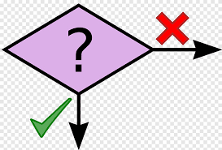

Tome decisões inteligentes em seus algoritmos!
Condicionais são estruturas de controle que permitem que um programa tome decisões baseadas em condições específicas.

"Se está chovendo, então levo guarda-chuva, senão saio sem guarda-chuva"
Esta é uma decisão condicional que fazemos naturalmente!
if condição: # código a ser executado # se a condição for verdadeira
idade = 18 if idade >= 18: print(" Vocé é maior de idade") print(" Pode dirigir!") # Resultado: # Como idade = 18 e 18 >= 18 é True, as duas mensagens serão exibidas.
# Entrada de dados base = float(input("Digite o valor da base: ")) altura = float(input("Digite o valor da altura: ")) # Processamento area = base * altura # Saída de dados print(f"A area do retangulo de base {base} e altura {altura} eh {area}")
Criar um programa que verifica se um número é par ou ímpar
Um número é par quando é divisível por 2 (resto da divisão por dois é igual a zero).
Usamos o operador % (módulo) para encontrar o resto.
numero = int(input("Digite um número: ")) if numero % 2 == 0: print(f"{numero} é PAR") else: print(f"{numero} é ÍMPAR") # Explicação: # O programa lê um número do usuário. # Usa a condicional if para verificar se o resto da divisão do número por 2 é 0. # Se for, imprime que o número é par; caso contrário, imprime que é ímpar.
# Comparações numéricas print(5 == 5) # True print(5 != 3) # True print(10 > 7) # True print(4 <= 4) # True # Comparações de strings nome = "Ana" print(nome == "Ana") # True print(nome != "João") # True
Use == para comparar (não =). O símbolo = é usado para atribuir valores!
AND ("E" lógico): Ambas condições devem ser verdadeiras
idade = 20 renda = 3000 if idade >= 18 and renda >= 2000: print("Aprovado para empréstimo")
OR ("OU" lógico): Pelo menos uma condição deve ser verdadeira
dia = "sábado" if dia == "sábado" or dia == "domingo": print("É final de semana!")
NOT ("NÃO" lógico): Inverte o valor da condição
chuva = False if not chuva: print("Vou sair sem guarda-chuva")
Agora vamos usar tudo junto.
idade = 25 estudante = True renda = 1500 if (idade >= 18 and renda >= 2000) or estudante: print("Elegível para desconto")
É colocar uma estrutura condicional dentro de outra, criando estruturas de decisões mais complexas.
usuario_valido = True senha_correta = True conta_ativa = True if usuario_valido: print("Usuário encontrado") if senha_correta: print("Senha correta") if conta_ativa: print("Acesso liberado!") print("Bem-vindo ao sistema") else: print("Conta inativa. Contate o suporte") else: print("Senha incorreta") print("Tente novamente") else: print("Usuário não encontrado")
Use aninhamento quando a segunda condição só faz sentido se a primeira for verdadeira.
if condição: # código se TRUE else: # código se FALSE
temperatura = 25 if temperatura > 30: print("Está muito quente!") print("Vou ligar o ar condicionado") else: print("Temperatura agradável") print("Não preciso de ar condicionado") # Resultado: # Como 25 não é > 30, executa o bloco else.
Verificar se uma pessoa pode votar baseado na idade informada.
idade = int(input("Digite sua idade: ")) if idade < 16: print("Não pode votar") elif idade < 18: print("Voto facultativo") elif idade < 70: print("Voto obrigatório") else: print("Voto facultativo") # Explicação: # O programa lê a idade do usuário. # Usa if, elif e else para verificar a faixa etária e imprimir a mensagem correspondente. #Testes: # Idade 15: "Não pode votar" # Idade 17: "Voto facultativo" # Idade 25: "Voto obrigatório" # Idade 75: "Voto facultativo"
Verificar se três lados informados podem formar um triângulo.
Para três lados formarem um triângulo:
Lados: 3, 4, 5
Resultado: É um triângulo!
a = float(input("Lado A: ")) b = float(input("Lado B: ")) c = float(input("Lado C: ")) if (a + b > c) and (a + c > b) and (b + c > a): print("Os lados formam um triângulo!") # Próximo slide: classificar tipo else: print("Os lados NÃO formam um triângulo") # Explicação: # O programa lê os três lados do usuário. # Usa uma condicional if;else com operadores lógicos # para verificar a regra fundamental. # Imprime se os lados formam ou não um triângulo.
if primeira_condição: # código para primeira condição elif segunda_condição: # código para segunda condição elif terceira_condição: # código para terceira condição (...) else: # código se nenhuma condição for verdadeira
nota = 85 if nota >= 90: print("Conceito A - Excelente!") elif nota >= 80: print("Conceito B - Muito Bom!") elif nota >= 70: print("Conceito C - Bom") elif nota >= 60: print("Conceito D - Regular") else: print("Conceito F - Insuficiente") # Resultado: # Como 85 >= 80, imprime "Conceito B - Muito Bom!"
Verificar se três lados informados podem formar um triângulo. Se formar um triângulo, qual o tipo?
a = float(input("Lado A: ")) b = float(input("Lado B: ")) c = float(input("Lado C: ")) if (a + b > c) and (a + c > b) and (b + c > a): print("Forma um triângulo!") if a == b == c: print("Tipo: EQUILÁTERO") elif a == b or a == c or b == c: print("Tipo: ISÓSCELES") else: print("Tipo: ESCALENO") else: print("NÃO forma um triângulo") # Testes: # Entrada: 3, 4, 5 # Saída: "Forma um triângulo!" e "Tipo: ESCALENO # Entrada: 2, 2, 2 # Saída: "Forma um triângulo!" e "Tipo: EQUILÁTERO"
Implemente um sistema de login simples que verifique usuário e senha informados estão corretos. Armazene em variáveis osusuário e senha esperados.
usuario_correto = "admin" senha_correta = "123456" usuario_informado = input("Usuário: ") senha_informada = input("Senha: ") if usuario_informado == usuario_correto: if senha_informada == senha_correta: print(f"Login realizado com sucesso!") print(f"Bem-vindo, {usuario_informado}!") break else: print("Senha incorreta") else: print("Usuário incorreto")
Modifique o prejeto gerado na Aula 1 para permitir que o usuário marque uma tarefa como concluída ou não concluída.
Exemplo de saída: Tarefa: Estudar Python - Status: Pendente
# Sistema de Gerenciamento de Tarefas print("=== SISTEMA DE TAREFAS ===") # Solicitar nome da tarefa nome_tarefa = input("Digite o nome da tarefa: ") # Confirmar adição da tarefa print(f"Tarefa '{nome_tarefa}' adicionada com sucesso!")
# Sistema de Gerenciamento de Tarefas - Versão Atualizada print("=== SISTEMA DE TAREFAS ===") # Solicitar nome da tarefa nome_tarefa = input("Digite o nome da tarefa: ") # Solicitar status da tarefa status_tarefa = input("A tarefa está concluída? (S/N): ") # Teste para verificar se a tarefa foi concluida if status_tarefa.upper() == "S": status_tarefa_verificada = "Concluída" else: status_tarefa = "Pendente" # Confirmar adição da tarefa print(f"Tarefa '{nome_tarefa}' adicionada com sucesso!") print(f"Status: {status_tarefa_verificada}")